Code
library(tidyverse)
library(tidycensus)
library(sf)
library(caret)
Sys.getenv("CENSUS_API_KEY") != "" # should print TRUE[1] TRUECode
options(scipen = 999)MUSA 5080 · Integrates Weeks 1–5 · Due Friday, October 16
This is not a competition. There’s no leaderboard and no target RMSE. The goal is to practice the full prediction workflow on a question you choose, and to find out what actually helps. Some features you’re sure will help won’t, and some you add on a whim will. Both are findings.
You’ll:
Timing. Parts 1–4 use only what we’ve covered through Week 5. You can finish them before the October 9 lecture. Part 5 is new material; the lecture explains it, and the instructions below give you the essentials.
Type the code yourself. The worked examples show the pattern. Your job is to apply it to your outcome and your data choices.
Every model is cross-validated on the same tracts with the same folds, so the rows in your model log are comparable. If a new variable has missing values, fill them (for example, 0 for a count, or the median with a note) or choose a different variable. The cv_rmse() helper below will stop and tell you if you break this rule.
Your outcome comes from the 2019–2023 ACS. Pull open data from 2023 or earlier (2021–2023 is ideal). Using 2025 data to predict a 2023 outcome uses information from the future, which a real prediction model would never have.
Don’t use any variable that’s built from your outcome or measures the same thing another way. Ask yourself: would an agency trying to predict this outcome for a tract have this variable? If the answer is “only because it’s basically the outcome,” leave it out.
library(tidyverse)
library(tidycensus)
library(sf)
library(caret)
Sys.getenv("CENSUS_API_KEY") != "" # should print TRUE[1] TRUEoptions(scipen = 999)This function runs 10-fold cross-validation with the same seed every time, so every model in your log is tested on the same folds. You don’t need to change it. Read it once so you know what it does.
ctrl <- trainControl(method = "cv", number = 10)
cv_rmse <- function(formula, data) {
df <- if (inherits(data, "sf")) st_drop_geometry(data) else data
vars <- all.vars(formula)
bad <- vars[sapply(vars, function(v) any(is.na(df[[v]])))]
if (length(bad) > 0) {
stop("These variables have NAs: ", paste(bad, collapse = ", "),
". Fill them or choose another variable (Rule 1: don't drop rows).")
}
set.seed(5080)
fit <- train(formula, data = df, method = "lm", trControl = ctrl)
fit$results$RMSE
}Every time you fit a new model, add a row. By the end, this table is the story of your assignment.
model_log <- tibble(
model = character(),
added = character(),
cv_rmse = numeric(),
notes = character()
)Pick a tract-level ACS variable for Philadelphia that matters for policy. Two outcomes are off limits: median gross rent (we did it in lab) and median home value (save it for A4).
Some ideas if you’re stuck:
| Outcome | Why an agency might care | ACS table |
|---|---|---|
| % of households with no vehicle | Transit planning | B08201 or B25044 |
| Mean travel time to work | Access to jobs | B08013_001 ÷ B08303_001 |
| % of people below poverty | Targeting services | B17001 |
| % of housing units vacant | Housing and blight | B25002 |
| % of households overcrowded | Housing conditions | B25014 |
Use load_variables(2023, "acs5") to browse and find exact variable codes.
Choose three to five ACS predictors for your baseline model. They should be things that plausibly relate to your outcome, but none of them may be built from your outcome (Rule 3).
Outcome: Determining who commutes via public transportation in Philly
philly_tracts <- get_acs(
geography = "tract",
state = "PA",
county = "Philadelphia",
variables = c(
total_pop = "B01003_001",
commute_transit = "B08301_010", # OUTCOME VARIABLE
# - PREDICTOR VARIABLES -
no_personal_vehicles = "B08201_002", # those without a car are more likely to use public transit
renters = "B25003_003", # renters are more likely to live temporarily, and thus without big purchases like a car
below_poverty_rate = "B17001_002" # taking public transit is cheaper than driving
),
year = 2023,
output = "wide",
geometry = TRUE
) %>%
st_transform(2272)
|
| | 0%
|
|= | 2%
|
|== | 3%
|
|=== | 4%
|
|=== | 5%
|
|==== | 6%
|
|===== | 7%
|
|===== | 8%
|
|====== | 9%
|
|======= | 10%
|
|======== | 11%
|
|======== | 12%
|
|========= | 13%
|
|========== | 14%
|
|========== | 15%
|
|=========== | 16%
|
|============ | 17%
|
|============ | 18%
|
|============= | 19%
|
|============== | 20%
|
|=============== | 21%
|
|=============== | 22%
|
|================ | 23%
|
|================= | 25%
|
|================== | 25%
|
|=================== | 26%
|
|=================== | 27%
|
|==================== | 28%
|
|===================== | 29%
|
|===================== | 30%
|
|====================== | 31%
|
|======================= | 32%
|
|======================= | 33%
|
|======================== | 34%
|
|========================= | 35%
|
|========================= | 36%
|
|========================== | 37%
|
|=========================== | 38%
|
|=========================== | 39%
|
|============================ | 40%
|
|============================= | 41%
|
|============================== | 42%
|
|============================== | 43%
|
|=============================== | 44%
|
|================================ | 45%
|
|================================ | 46%
|
|================================= | 47%
|
|================================== | 48%
|
|================================== | 49%
|
|=================================== | 50%
|
|==================================== | 51%
|
|===================================== | 52%
|
|===================================== | 53%
|
|====================================== | 54%
|
|======================================= | 55%
|
|======================================= | 56%
|
|======================================== | 57%
|
|========================================= | 58%
|
|========================================== | 60%
|
|=========================================== | 61%
|
|=========================================== | 62%
|
|============================================ | 63%
|
|============================================= | 64%
|
|============================================= | 65%
|
|============================================== | 66%
|
|=============================================== | 67%
|
|=============================================== | 68%
|
|================================================ | 69%
|
|================================================= | 70%
|
|================================================= | 71%
|
|================================================== | 72%
|
|=================================================== | 73%
|
|=================================================== | 74%
|
|==================================================== | 75%
|
|===================================================== | 76%
|
|====================================================== | 76%
|
|====================================================== | 77%
|
|======================================================= | 78%
|
|======================================================== | 79%
|
|======================================================== | 80%
|
|========================================================= | 81%
|
|========================================================== | 82%
|
|========================================================== | 83%
|
|=========================================================== | 84%
|
|============================================================ | 85%
|
|============================================================ | 86%
|
|============================================================= | 87%
|
|============================================================== | 88%
|
|============================================================== | 89%
|
|=============================================================== | 90%
|
|================================================================ | 91%
|
|================================================================= | 92%
|
|================================================================= | 93%
|
|================================================================== | 94%
|
|=================================================================== | 95%
|
|=================================================================== | 96%
|
|==================================================================== | 97%
|
|===================================================================== | 98%
|
|===================================================================== | 99%
|
|======================================================================| 100%philly_tracts <- philly_tracts %>%
mutate(
# build your outcome, e.g. a percentage:
y = commute_transitE / total_popE * 100,
# and its reliability. For a percentage, use tidycensus::moe_prop();
# for a median or count, use the E and M columns directly.
y_moe = moe_prop(commute_transitE, total_popE, commute_transitM, total_popM) * 100,
y_cv = (y_moe / 1.645) / y * 100
# your predictors:
# ___ = ___
)Before you commit, check three things.
# How many tracts have no value for your outcome?
sum(is.na(philly_tracts$y))[1] 17# How reliable is it?
summary(philly_tracts$y_cv) Min. 1st Qu. Median Mean 3rd Qu. Max. NAs
8.576 24.238 32.850 Inf 40.833 Inf 17 philly_tracts %>%
mutate(reliability = case_when(
y_cv < 12 ~ "High",
y_cv <= 40 ~ "Moderate",
TRUE ~ "Low"
)) %>%
st_drop_geometry() %>%
count(reliability) reliability n
1 High 3
2 Low 122
3 Moderate 283# What does the distribution look like?
ggplot(philly_tracts, aes(x = y)) +
geom_histogram(bins = 30) +
theme_minimal()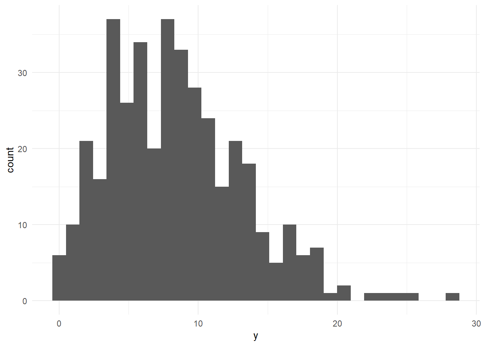
If more than about a third of tracts have low reliability, consider a different outcome, or one built from larger counts. Write your reasoning either way.
Answer (2–3 sentences): What is your outcome, why would an agency want to predict it, and how reliable is it?
Your answer: My outcome is the number of individuals taking public transit to work. This is particularly important to transportation agencies such as SEPTA or PennDOT in identifying underserved areas, where transit demand is higher than existing services can supply. The reliability is passable: approximately 30% of tracts are of low reliability. This means that the remaining 70% of census tracts provide sufficiently accurate estimates for modeling.
Filter once, here, and never again. Every later step uses tracts.
tracts <- philly_tracts %>%
filter(total_popE > 0,
!is.na(y)
# add !is.na() for each baseline predictor like in the in-class lab
)
nrow(philly_tracts)[1] 408nrow(tracts)[1] 391Answer: How many tracts did you lose, and what kinds of places are they?
Your answer: 17 census tracts were dropped. These census tracts contained no populations, and are usually reserved for non-residential uses such as airports and heavy industry sites. —
Plot your outcome against each predictor before modeling (the Week 3 habit).
# one scatterplot per predictor, e.g.:
ggplot(tracts, aes(x = no_personal_vehiclesE, y = y)) + geom_point(alpha = 0.5) +
geom_smooth(method = "lm", se = FALSE) + theme_minimal()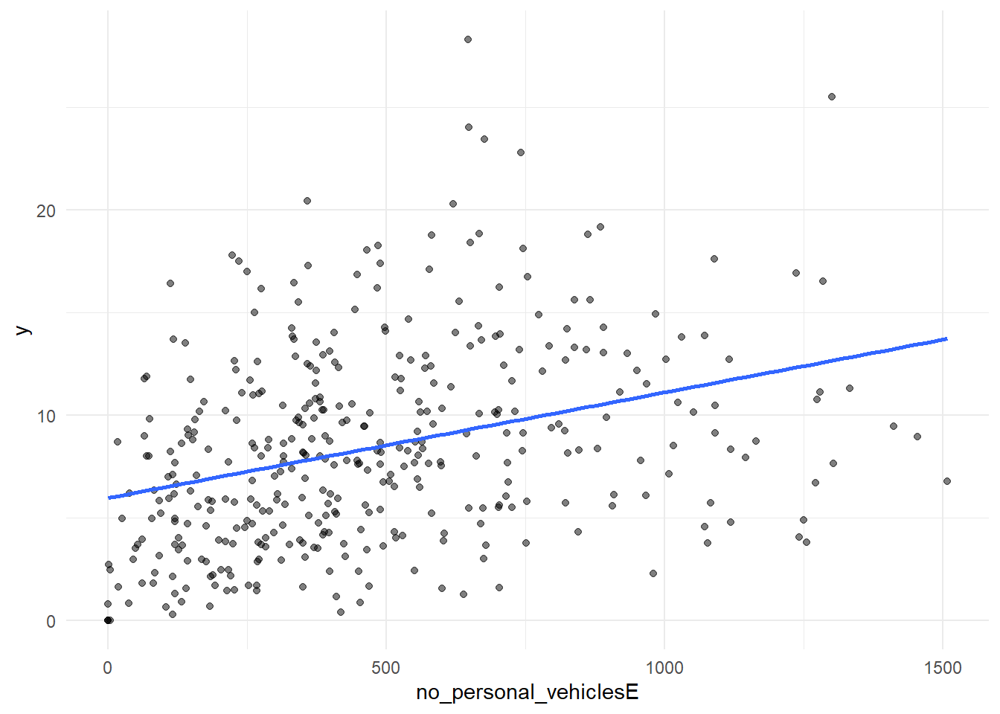
ggplot(tracts, aes(x = rentersE, y = y)) + geom_point(alpha = 0.5) +
geom_smooth(method = "lm", se = FALSE) + theme_minimal()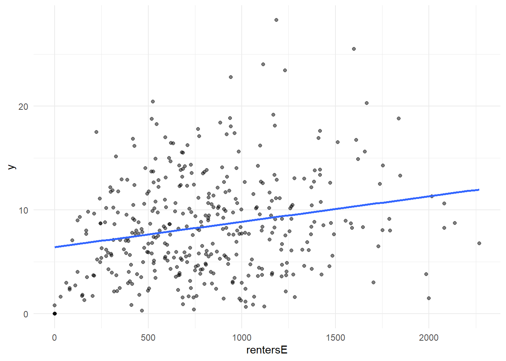
ggplot(tracts, aes(x = below_poverty_rateE, y = y)) + geom_point(alpha = 0.5) +
geom_smooth(method = "lm", se = FALSE) + theme_minimal()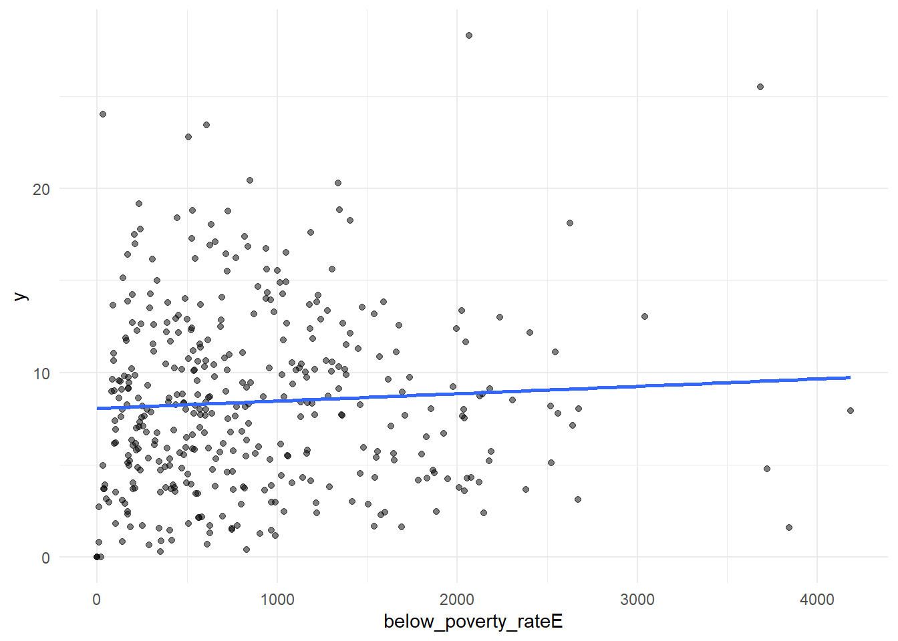
f1 <- y ~ no_personal_vehiclesE + rentersE + below_poverty_rateE
m1 <- lm(f1, data = tracts)
summary(m1)
Call:
lm(formula = f1, data = tracts)
Residuals:
Min 1Q Median 3Q Max
-9.3697 -3.3670 -0.6593 2.8491 19.8694
Coefficients:
Estimate Std. Error t value Pr(>|t|)
(Intercept) 6.299491950 0.513230866 12.274 < 0.0000000000000002
no_personal_vehiclesE 0.006056285 0.001055588 5.737 0.0000000194
rentersE -0.000006273 0.000717054 -0.009 0.9930
below_poverty_rateE -0.000872199 0.000372755 -2.340 0.0198
(Intercept) ***
no_personal_vehiclesE ***
rentersE
below_poverty_rateE *
---
Signif. codes: 0 '***' 0.001 '**' 0.01 '*' 0.05 '.' 0.1 ' ' 1
Residual standard error: 4.563 on 387 degrees of freedom
Multiple R-squared: 0.123, Adjusted R-squared: 0.1162
F-statistic: 18.09 on 3 and 387 DF, p-value: 0.00000000005273model_log <- model_log %>%
add_row(model = "m1", added = "ACS baseline",
cv_rmse = cv_rmse(f1, tracts),
notes = "___")
model_log# A tibble: 1 × 4
model added cv_rmse notes
<chr> <chr> <dbl> <chr>
1 m1 ACS baseline 4.57 ___ Write the CV RMSE as a sentence, in your outcome’s units: “On tracts it hasn’t seen, the baseline model misses by about 4.57%.”
Save this map. You’ll compare it to your final model’s map in Part 6.
tracts <- tracts %>% mutate(resid_m1 = residuals(m1))
ggplot(tracts) +
geom_sf(aes(fill = resid_m1), color = NA) +
scale_fill_gradient2(low = "#2166ac", mid = "grey95", high = "#b2182b", midpoint = 0) +
theme_void() +
labs(title = "Baseline model: where it's wrong",
subtitle = "Red = actual higher than predicted",
fill = "Residual")
Answer: Where do the residuals cluster? What might those places have in common that your model doesn’t know about? Use this answer to choose your open data layers in Part 3.
Your answer: The residuals appear to cluster in 3 distinct areas: the northeast, northwest, and southwest edges of the city. Both the northeast and northwest, located in regions far from most of the city’s transit service, appear as having overestimations for transit usage. By contrast, the southwest edge is served by numerous frequent buses and trolley lines, and appears as having underestimations for transit usage.
Many of the city’s datasets on OpenDataPhilly are served through a Carto SQL API. You send a SQL query in a URL, and it sends back data. Ask for format=GeoJSON and st_read() reads the result directly, just like the Indego feed in Week 4.
The pattern:
https://phl.carto.com/api/v2/sql?format=GeoJSON&q=SELECT ... FROM table_name WHERE ...Three pieces of SQL are all you need:
SELECT the_geom, column1, column2 chooses which columns come back. Always include the_geom, or you get no geometry.FROM table_name chooses the dataset.WHERE ... filters rows. Filter in the query, not in R. Some tables have millions of rows, and pulling everything will be slow or fail.This helper builds the URL for you. Spaces and symbols in a URL need encoding, and URLencode() handles that.
carto_get <- function(sql) {
url <- paste0("https://phl.carto.com/api/v2/sql?format=GeoJSON&q=", URLencode(sql))
st_read(url, quiet = TRUE)
}On a dataset’s OpenDataPhilly page, look for the API link. The table name is the word after FROM in the example query. To see what values a column takes before you filter on it, ask for a count in CSV format:
# What kinds of crime are in the incidents table in 2023?
url <- paste0("https://phl.carto.com/api/v2/sql?format=csv&q=",
URLencode("SELECT text_general_code, COUNT(*) AS n
FROM incidents_part1_part2
WHERE dispatch_date >= '2023-01-01' AND dispatch_date < '2024-01-01'
GROUP BY text_general_code ORDER BY n DESC"))
read_csv(url)# A tibble: 32 × 2
text_general_code n
<chr> <dbl>
1 Thefts 37054
2 Other Assaults 25986
3 Motor Vehicle Theft 22478
4 Vandalism/Criminal Mischief 17346
5 All Other Offenses 13334
6 Theft from Vehicle 13002
7 Fraud 7661
8 Aggravated Assault No Firearm 5134
9 Burglary Residential 3800
10 Aggravated Assault Firearm 3320
# ℹ 22 more rowsburglary <- carto_get(
"SELECT the_geom, text_general_code, dispatch_date
FROM incidents_part1_part2
WHERE dispatch_date >= '2023-01-01' AND dispatch_date < '2024-01-01'
AND text_general_code = 'Burglary Residential'"
) %>%
st_transform(st_crs(tracts)) # Carto returns EPSG 4326; translate immediately
nrow(burglary)[1] 3800Some records have no location. Drop them with filter(!st_is_empty(burglary)), and count how many you lost. Every point you drop is a point that won’t be counted.
These tables were available on Carto as of this fall. If a query fails, check the dataset’s OpenDataPhilly page for the current table name.
| Data | Table | Filter on | Notes |
|---|---|---|---|
| Crime incidents | incidents_part1_part2 |
dispatch_date, text_general_code |
Pick specific offense types |
| Shooting victims | shootings |
date_ |
Small enough to pull several years |
| 311 requests | public_cases_fc |
requested_datetime, service_name |
Use the count query above to see service names |
| Indego stations | (not Carto) https://www.rideindego.com/stations/json/ |
— | The Week 4 feed |
Datasets not on Carto often have a GeoJSON download link on their OpenDataPhilly page. st_read() reads those URLs too. For example, navigage to https://opendataphilly.org/, find a dataset that you’d like to import. I found city landmarks. On the page there is a link to a GeoJSON file. I simply right-clicked on that hyperlink and copied it and then used st_read() and pasted the link:
landmarks <- st_read(“https://hub.arcgis.com/api/v3/datasets/6b2fe4a0fbe14e0a8e6afceaea230b8e_0/downloads/data?format=geojson&spatialRefId=4326&where=1%3D1”)
Pull at least two layers that you think relate to your outcome. Base your choice on your Part 2C answer.
layer1 <- st_read("https://hub.arcgis.com/api/v3/datasets/c2dfc18b429049e5aa4e9afdbebd3c3f_0/downloads/data?format=geojson&spatialRefId=4326&where=1%3D1")Reading layer `bus_transit_shelters' from data source
`https://hub.arcgis.com/api/v3/datasets/c2dfc18b429049e5aa4e9afdbebd3c3f_0/downloads/data?format=geojson&spatialRefId=4326&where=1%3D1'
using driver `GeoJSON'
Simple feature collection with 487 features and 7 fields
Geometry type: POINT
Dimension: XY
Bounding box: xmin: -75.27078 ymin: 39.89073 xmax: -74.98781 ymax: 40.11902
Geodetic CRS: WGS 84layer2 <- st_read("https://hub.arcgis.com/api/v3/datasets/b227f3ddbe3e47b4bcc7b7c65ef2cef6_0/downloads/data?format=geojson&spatialRefId=4326&where=1%3D1")Reading layer `Transit_Stops_(Fall_2026)' from data source
`https://hub.arcgis.com/api/v3/datasets/b227f3ddbe3e47b4bcc7b7c65ef2cef6_0/downloads/data?format=geojson&spatialRefId=4326&where=1%3D1'
using driver `GeoJSON'
Simple feature collection with 21517 features and 9 fields
Geometry type: POINT
Dimension: XY
Bounding box: xmin: -75.83469 ymin: 39.80381 xmax: -74.7542 ymax: 40.33401
Geodetic CRS: WGS 84Answer: Why these layers? What do you expect them to capture that the ACS variables don’t?
Your answer: Both transit stations and bus shelters were selected as they capture where transit is more present and has greater investment. This should better account for the underestimations of usage in transit-oriented neighborhoods such as Kingsessing and overestimations of usage in car-oriented neighborhoods like Chestnut Hill. —
Every feature below reuses a Week 4 tool. The worked examples use burglaries and Indego stations; you build the same types from your own layers.
How many burglaries fall in each tract?
tracts <- tracts %>%
mutate(n_burglary = lengths(st_intersects(., burglary)))
summary(tracts$n_burglary) Min. 1st Qu. Median Mean 3rd Qu. Max.
0.000 4.000 7.000 9.407 13.000 48.000 A tract with no burglaries gets 0, not NA, so Rule 1 is safe.
Raw counts mostly measure tract size. A big tract has more of everything. Normalize by area, by population, or by housing units, depending on what makes sense for the thing you’re counting.
tracts <- tracts %>%
mutate(
area_sqmi = as.numeric(st_area(.)) / 27878400, # sq ft in a sq mile
burglary_per_sqmi = n_burglary / area_sqmi,
burglary_per_1k = n_burglary / total_popE * 1000
)If a tract has 40 residents and 3 burglaries, its rate is 75 per 1,000, which is a huge number built on tiny counts. Look at the tracts with the highest per-capita rates before you trust them. This is the Week 3 lesson about small denominators again.
How far is each tract from its nearest Indego station? Use the Week 4 pattern: find the nearest feature, then measure to it element by element.
stations <- st_read("https://www.rideindego.com/stations/json/", quiet = TRUE) %>%
st_transform(st_crs(tracts))
tract_pts <- st_point_on_surface(tracts) # always inside the tract, unlike a centroid
nearest_idx <- st_nearest_feature(tract_pts, stations)
tracts <- tracts %>%
mutate(dist_station_mi = as.numeric(
st_distance(tract_pts, stations[nearest_idx, ], by_element = TRUE)) / 5280)Sometimes the “thing” is a single location, such as City Hall as a stand-in for the center of the regional economy.
city_hall <- st_sfc(st_point(c(-75.1636, 39.9526)), crs = 4326) %>%
st_transform(st_crs(tracts))
tracts <- tracts %>%
mutate(dist_ch_mi = as.numeric(st_distance(tract_pts, city_hall)) / 5280)Build at least three spatial features from your own layers, and use at least two types (count, density, nearest distance, distance to a place). After each one, fit a model, cross-validate it, and log it.
bus_shelters <- st_transform(layer1, crs = st_crs(tracts))
transit_stops <- st_transform(layer2, crs = st_crs(tracts))
tract_pts <- st_point_on_surface(tracts) # always inside the tract, unlike a centroid
nearest_idx <- st_nearest_feature(tract_pts, bus_shelters)
tracts <- tracts %>%
mutate(
area_sqmi = as.numeric(st_area(.)) / 27878400,
n_transitstops = lengths(st_intersects(., transit_stops)),
n_transitstops_per_sqmi = n_transitstops / area_sqmi,
n_bus_shelters = lengths(st_intersects(., bus_shelters)),
n_bus_shelters_per_sqmi = n_bus_shelters / area_sqmi
)
f2 <- update(f1, . ~ . + n_transitstops)
model_log <- model_log %>%
add_row(model = "m2", added = "number of transit stops",
cv_rmse = cv_rmse(f2, tracts),
notes = "___")
f3 <- update(f1, . ~ . + n_transitstops_per_sqmi)
model_log <- model_log %>%
add_row(model = "m3", added = "density of transit stops",
cv_rmse = cv_rmse(f3, tracts),
notes = "___")
f4 <- update(f1, . ~ . + n_bus_shelters)
model_log <- model_log %>%
add_row(model = "m4", added = "number of bus shelters",
cv_rmse = cv_rmse(f4, tracts),
notes = "___")
f5 <- update(f1, . ~ . + n_bus_shelters_per_sqmi)
model_log <- model_log %>%
add_row(model = "m5", added = "density of bus shelters",
cv_rmse = cv_rmse(f5, tracts),
notes = "___")
model_log# A tibble: 5 × 4
model added cv_rmse notes
<chr> <chr> <dbl> <chr>
1 m1 ACS baseline 4.57 ___
2 m2 number of transit stops 4.52 ___
3 m3 density of transit stops 4.56 ___
4 m4 number of bus shelters 4.58 ___
5 m5 density of bus shelters 4.59 ___ Answer: Which spatial feature helped most? Did any feature you expected to help do nothing, or make CV RMSE worse? Why might that be?
Your answer: I expected the number of transit stops to help the CV RMSE, and it did help the most out of the features I tested. By contrast, I expected the density of transit stops to improve beyond that, yet it was marginally better than the ACS baseline and far worse than the raw number of transit stops. In a similar vein, the number of bus stops made the CV RMSE worse, despite also containing transit information. This may have to do with a geographically even distribution of funds to bus shelter installation in Philadelphia, rather than prioritizing areas with high commute ridership. —
Watch the October 9 recorded lecture before you start this part. Below is a summary to work from.
So far, every predictor has entered the model as a straight line: each additional unit of X changes predicted Y by the same amount, everywhere. Transformations let the model bend. For prediction, the question is simply does the bend lower CV RMSE? For interpretation, each transformation changes what a coefficient means, so you need to know how to read it.
Keep your outcome y untransformed in this assignment. If you model log(y), your CV RMSE comes out in log units and can’t be compared to the other rows in your log. (Predicting a logged outcome well requires back-transforming, which is an A4 topic.)
Many urban variables are skewed: a few tracts have huge values, and most have small ones. Income, density, and counts are typical. A log compresses the long tail, so a model can use the difference between 1 and 10 as well as the difference between 100 and 1,000.
#ggplot(tracts, aes(x = burglary_per_sqmi)) + geom_histogram(bins = 30) + theme_minimal()
#ggplot(tracts, aes(x = log1p(burglary_per_sqmi))) + geom_histogram(bins = 30) + theme_minimal()
ggplot(tracts, aes(x = log1p(n_transitstops))) + geom_histogram(bins = 30) + theme_minimal()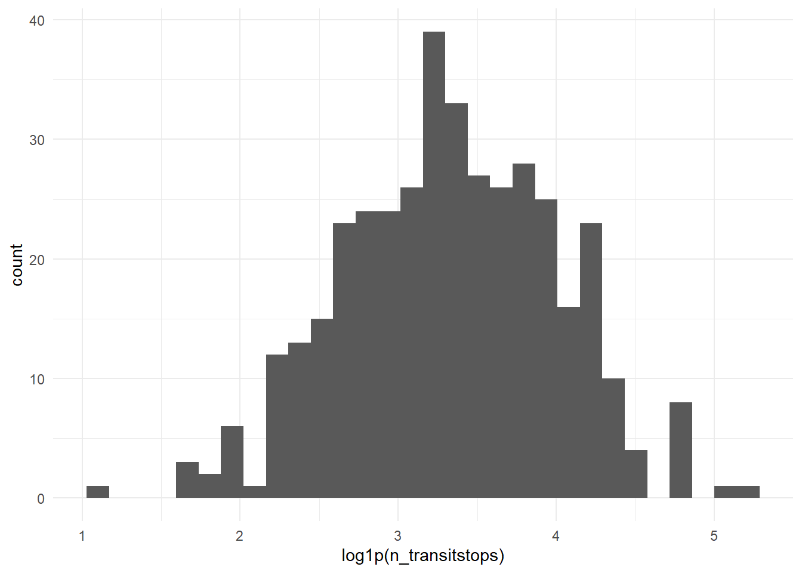
ggplot(tracts, aes(x = log1p(n_transitstops_per_sqmi))) + geom_histogram(bins = 30) + theme_minimal()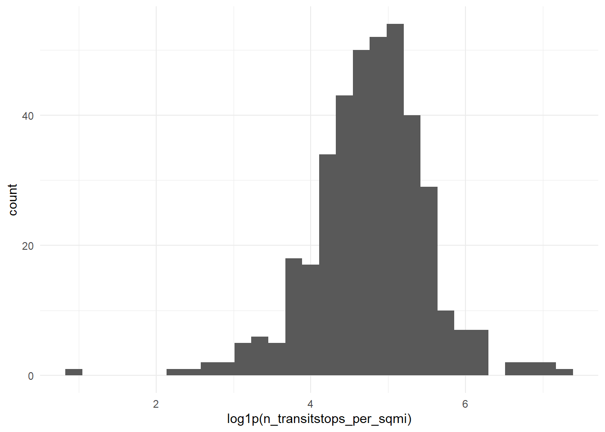
ggplot(tracts, aes(x = log1p(n_bus_shelters))) + geom_histogram(bins = 30) + theme_minimal()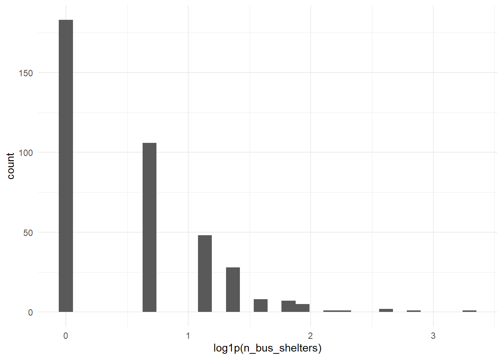
ggplot(tracts, aes(x = log1p(n_bus_shelters_per_sqmi))) + geom_histogram(bins = 30) + theme_minimal()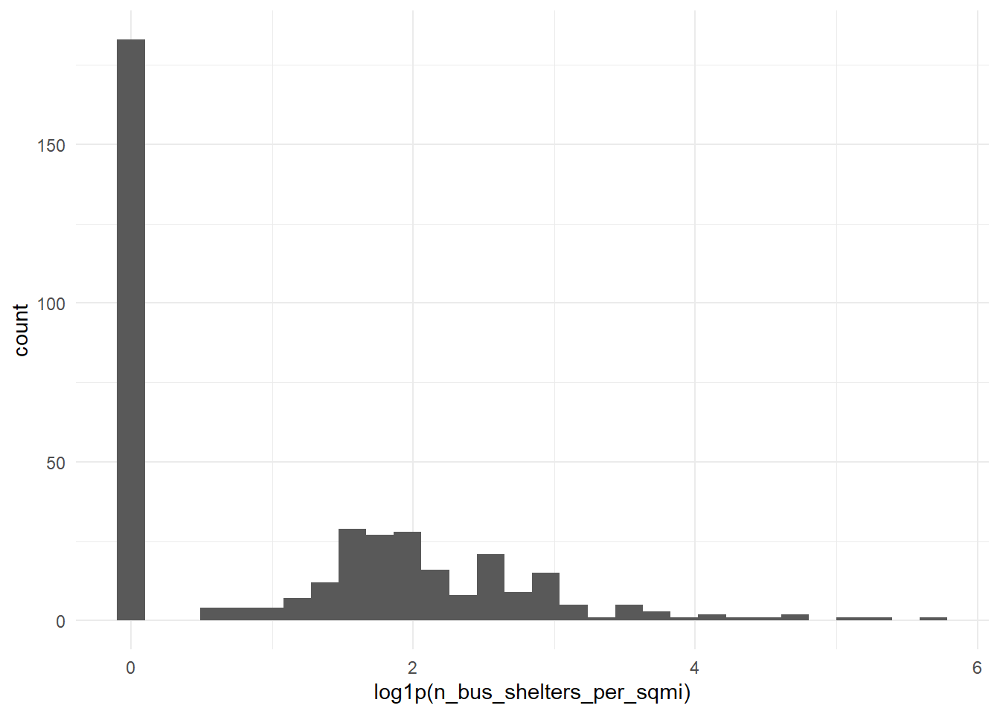
log(0) is -Inf, and it will break your model. Counts and densities often include zeros. Use log1p(x), which computes log(x + 1), for anything that can be 0.
Reading the coefficient: when a predictor is logged, a 1% increase in X goes with a change of about β/100 in Y, in Y’s units. With log1p, this reading is approximate for small values of X.
If your scatterplot bends (rising and then flattening, or falling and then rising), a squared term lets the line curve. Write it with I(), which tells R to do the arithmetic rather than read ^ as formula syntax.
# m_sq <- lm(y ~ dist_ch_mi + I(dist_ch_mi^2), data = tracts)
# summary(m_sq)Reading the coefficient: you can’t read either coefficient alone anymore. The effect of X depends on where you are along X. A positive linear term with a negative squared term means Y rises with X and then levels off or turns down. Plot the fitted curve to see it:
# ggplot(tracts, aes(x = dist_ch_mi, y = y)) +
# geom_point(alpha = 0.4) +
# geom_smooth(method = "lm", formula = y ~ x + I(x^2), se = FALSE, color = "red") +
# theme_minimal()
ggplot(tracts, aes(x = n_transitstops, y = y)) +
geom_point(alpha = 0.4) +
geom_smooth(method = "lm", formula = y ~ x + I(x^2), se = FALSE, color = "red") +
theme_minimal()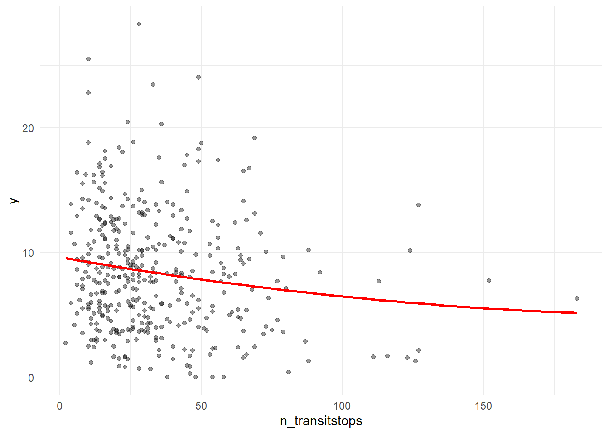
ggplot(tracts, aes(x = n_transitstops_per_sqmi, y = y)) +
geom_point(alpha = 0.4) +
geom_smooth(method = "lm", formula = y ~ x + I(x^2), se = FALSE, color = "red") +
theme_minimal()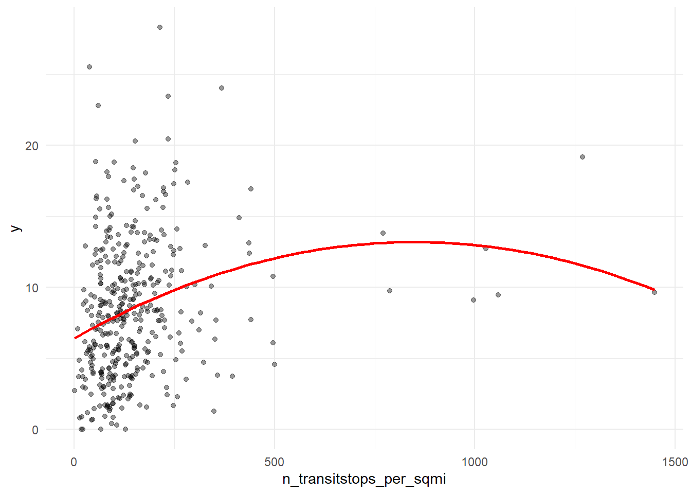
ggplot(tracts, aes(x = n_bus_shelters, y = y)) +
geom_point(alpha = 0.4) +
geom_smooth(method = "lm", formula = y ~ x + I(x^2), se = FALSE, color = "red") +
theme_minimal()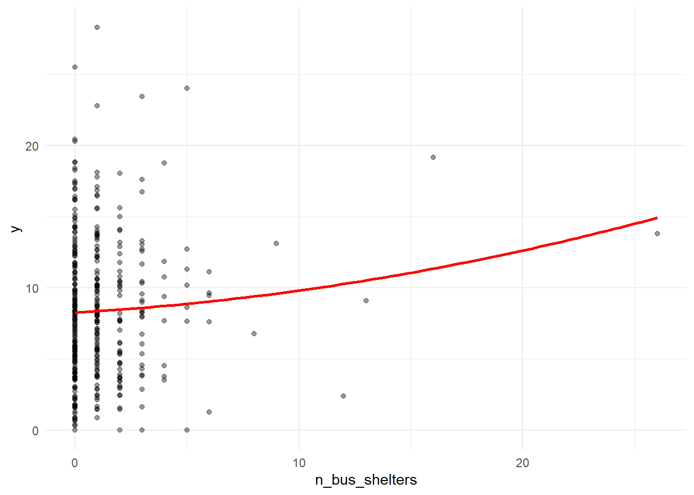
ggplot(tracts, aes(x = n_bus_shelters_per_sqmi, y = y)) +
geom_point(alpha = 0.4) +
geom_smooth(method = "lm", formula = y ~ x + I(x^2), se = FALSE, color = "red") +
theme_minimal()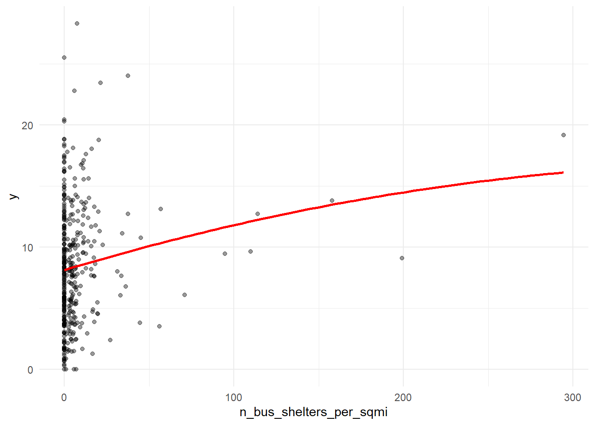
Sometimes a number works better as groups, either because the relationship isn’t smooth or because the categories are meaningful. You can make categories from any variable with case_when() or cut(), and then make sure R treats them as a factor.
# tracts <- tracts %>%
# mutate(
# ring = case_when(
# dist_ch_mi < 2 ~ "Core",
# dist_ch_mi < 5 ~ "Inner",
# TRUE ~ "Outer"
# ),
# ring = factor(ring, levels = c("Core", "Inner", "Outer"))
# )
#
# tracts %>% st_drop_geometry() %>% count(ring)
tracts <- tracts %>%
mutate(
bus_shelters_density = case_when(
n_bus_shelters_per_sqmi == 0 ~ "None",
n_bus_shelters_per_sqmi < 10 ~ "1-9",
TRUE ~ "10+"
),
bus_shelters_density = factor(bus_shelters_density, levels = c("None", "1-9", "10+"))
)
tracts %>% st_drop_geometry() %>% count(bus_shelters_density) bus_shelters_density n
1 None 183
2 1-9 136
3 10+ 72m_cat <- lm(y ~ bus_shelters_density, data = tracts)
summary(m_cat)
Call:
lm(formula = y ~ bus_shelters_density, data = tracts)
Residuals:
Min 1Q Median 3Q Max
-9.1805 -3.4421 -0.2943 2.6921 20.6152
Coefficients:
Estimate Std. Error t value Pr(>|t|)
(Intercept) 8.1769 0.3520 23.229 < 0.0000000000000002 ***
bus_shelters_density1-9 -0.5141 0.5391 -0.954 0.340921
bus_shelters_density10+ 2.2885 0.6625 3.455 0.000612 ***
---
Signif. codes: 0 '***' 0.001 '**' 0.01 '*' 0.05 '.' 0.1 ' ' 1
Residual standard error: 4.762 on 388 degrees of freedom
Multiple R-squared: 0.04245, Adjusted R-squared: 0.03751
F-statistic: 8.6 on 2 and 388 DF, p-value: 0.0002217# tracts <- tracts %>%
# mutate(
# bus_shelters_count = case_when(
# n_bus_shelters_per_sqmi == 0 ~ "None",
# n_bus_shelters_per_sqmi < 4 ~ "1-3",
# TRUE ~ "4+"
# ),
# bus_shelters_count = factor(bus_shelters_count, levels = c("None", "1-3", "4+"))
# )
#
# tracts %>% st_drop_geometry() %>% count(bus_shelters_count)
#
# m_cat <- lm(y ~ bus_shelters_count, data = tracts)
# summary(m_cat)Reading the coefficients: R turns a factor with k categories into k − 1 dummy variables. The category left out is the reference level (here, “Core,” the first level). Each coefficient is the difference from the reference: ringOuter is how much higher or lower predicted Y is in outer tracts compared to core tracts, holding everything else in the model constant. To change the reference, use relevel(ring, ref = "Outer").
If a category has only a handful of tracts, its coefficient is unstable, and in cross-validation some folds may not contain it at all. Aim for at least 20 tracts per category.
Try at least one of each: a log, a squared term, and a categorical variable. Choose which variables to transform based on your plots, not at random. Log each model.
f_log <- update(f1, . ~ . + log1p(n_transitstops_per_sqmi))
model_log <- model_log %>%
add_row(model = "m6", added = "log of transit stops per square mi",
cv_rmse = cv_rmse(f_log, tracts),
notes = "___")
# squared term
f_squared <- update(f1, . ~ . + (n_transitstops^2))
model_log <- model_log %>%
add_row(model = "m7", added = "transit stops count squared",
cv_rmse = cv_rmse(f_squared, tracts),
notes = "___")
# categorical
f_category <- update(f1, . ~ . + bus_shelters_density)
model_log <- model_log %>%
add_row(model = "m8", added = "categorized bus shelters per square mi",
cv_rmse = cv_rmse(f_category, tracts),
notes = "___")
model_log# A tibble: 8 × 4
model added cv_rmse notes
<chr> <chr> <dbl> <chr>
1 m1 ACS baseline 4.57 ___
2 m2 number of transit stops 4.52 ___
3 m3 density of transit stops 4.56 ___
4 m4 number of bus shelters 4.58 ___
5 m5 density of bus shelters 4.59 ___
6 m6 log of transit stops per square mi 4.53 ___
7 m7 transit stops count squared 4.52 ___
8 m8 categorized bus shelters per square mi 4.55 ___ Answer: Which transformation helped most? For your categorical variable, write one sentence reading one of its coefficients correctly, naming the reference level.
Your answer: The transformation that helped the most was the raw transit stops squared. The bus_shelter_density in category “10+” is 2.28% higher usage of public transit for commuting than census tracts without any bus shelters.
Combine the features and transformations that earned their place, judged by CV RMSE, not p-values.
f_final <- update(f1, . ~ . + n_transitstops + log1p(n_transitstops_per_sqmi))
m_final <- lm(f_final, data = tracts)
summary(m_final)
Call:
lm(formula = f_final, data = tracts)
Residuals:
Min 1Q Median 3Q Max
-10.4686 -2.8188 -0.7607 2.4814 18.2988
Coefficients:
Estimate Std. Error t value Pr(>|t|)
(Intercept) -0.43052692 1.56653108 -0.275 0.783596
no_personal_vehiclesE 0.00395379 0.00107462 3.679 0.000267 ***
rentersE 0.00002924 0.00068774 0.043 0.966112
below_poverty_rateE -0.00052531 0.00036275 -1.448 0.148398
n_transitstops -0.05538558 0.01014811 -5.458 0.0000000866 ***
log1p(n_transitstops_per_sqmi) 1.94587969 0.36921327 5.270 0.0000002273 ***
---
Signif. codes: 0 '***' 0.001 '**' 0.01 '*' 0.05 '.' 0.1 ' ' 1
Residual standard error: 4.358 on 385 degrees of freedom
Multiple R-squared: 0.2041, Adjusted R-squared: 0.1938
F-statistic: 19.74 on 5 and 385 DF, p-value: < 0.00000000000000022model_log <- model_log %>%
add_row(model = "final", added = "number of transit stops + log-transformed transit stop density",
cv_rmse = cv_rmse(f_final, tracts),
notes = "___")
model_log# A tibble: 9 × 4
model added cv_rmse notes
<chr> <chr> <dbl> <chr>
1 m1 ACS baseline 4.57 ___
2 m2 number of transit stops 4.52 ___
3 m3 density of transit stops 4.56 ___
4 m4 number of bus shelters 4.58 ___
5 m5 density of bus shelters 4.59 ___
6 m6 log of transit stops per square mi 4.53 ___
7 m7 transit stops count squared 4.52 ___
8 m8 categorized bus shelters per square mi 4.55 ___
9 final number of transit stops + log-transformed transit stop de… 4.38 ___ tracts <- tracts %>% mutate(resid_m1 = residuals(m1))
ggplot(tracts) +
geom_sf(aes(fill = resid_m1), color = NA) +
scale_fill_gradient2(low = "#2166ac", mid = "grey95", high = "#b2182b", midpoint = 0) +
theme_void() +
labs(title = "Baseline model: where it's wrong",
subtitle = "Red = actual higher than predicted",
fill = "Residual")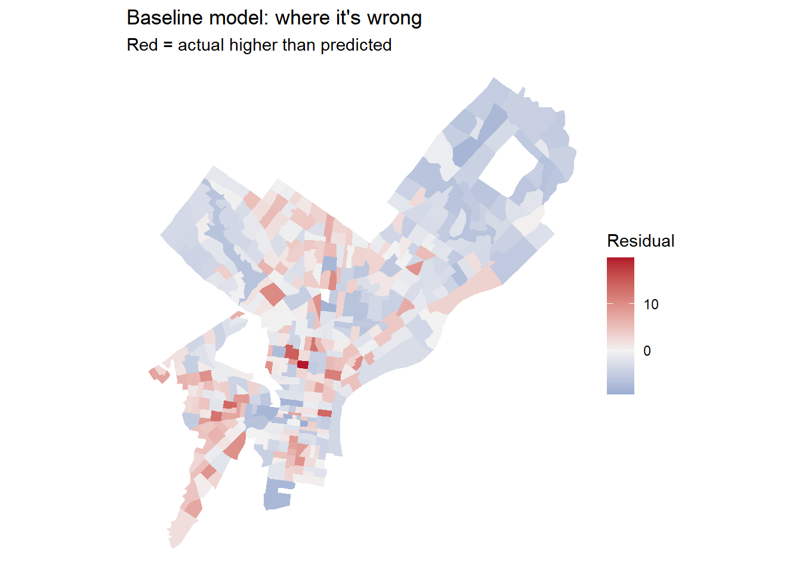
tracts <- tracts %>% mutate(resid_final = residuals(m_final))
ggplot(tracts) +
geom_sf(aes(fill = resid_final), color = NA) +
scale_fill_gradient2(low = "#2166ac", mid = "grey95", high = "#b2182b", midpoint = 0) +
theme_void() +
labs(title = "Final model: where it's wrong",
subtitle = "Red = actual higher than predicted",
fill = "Residual")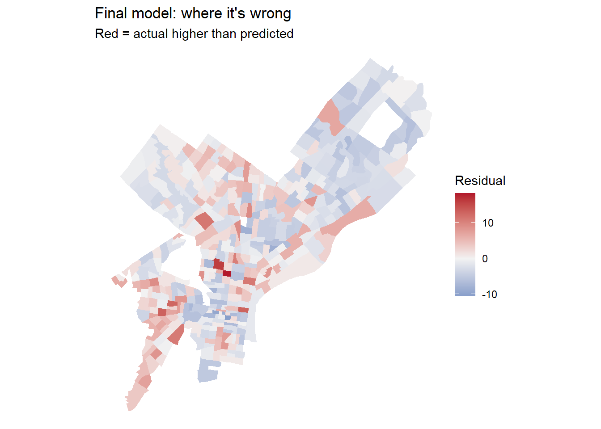
Put your two residual maps side by side, or put them next to each other in the rendered document. Did the clusters from Part 2C shrink? Where did they stay?
Some of the primary clusters from Part 2C shrank. Clusters that had overestimated in Northeast and Northwest Philadelphia shrank, while the underestimated cluster in Southwest Philadelphia remained.
ggplot(tracts, aes(x = y_cv, y = abs(resid_final))) +
geom_point(alpha = 0.5) +
geom_smooth(se = FALSE) +
labs(x = "CV of your outcome estimate (%)", y = "Size of the miss") +
theme_minimal()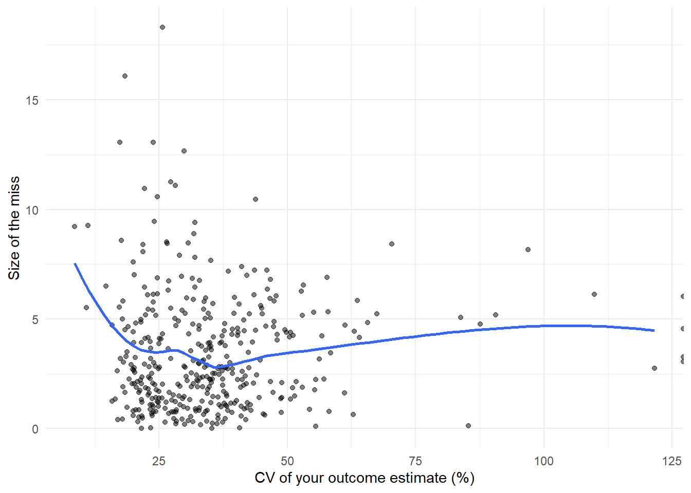
Answer in prose, drawing on your model log (incorporate our words of the day for bonus points. just kidding):
Your answer: The feature that ultimately lowered CV RMSE the most across the model was the raw number of transit stops. Interestingly, including the log-transformed number of transit stop density as well lowered the CV RMSE much lower compared with only using either predictor, despite the two predictors’ multicollinearity. The reason for the effectiveness of the raw predictor is in its relation to transit access. As more transit stops exist in a census tract, there is a greater likelihood of more buses that come through; more frequent transit leads to higher use. What explains the log-transformed predictor in conjunction is less predictable. Perhaps having denser transit stop locations offsets overestimations among larger census tracts? This could explain why the final model has more of a residual-reducing effect on the outer, less dense suburbs of Philadelphia than in the denser inner suburbs. The predictor that disappointed me the most was bus shelter density: I would have thought that transit investment as such would lead to a measurable increase in commuter ridership. However, this predictor made the model worse - this could be because of the even geographic distribution of bus shelters outside of Center City. The log-transformed transit stop density feature has a coefficient of 1.946. This means that for every 1% increase in transit stop density within the census tract, the public transit commute-share percentage increases by 1.946%. Within the remaining residuals map, the main cluster left appears to be Southwest Philadelphia. The one thing I can think of unique to that area is that it features the frequent, fast trolleys that run below Center City, perhaps encouraging more transit trips than the transit stop data, which does not distinguish between transit types, would let on. To account for this, I would use the ACS variable B08303 - Travel Time to Work. The remaining error beyond that might be noise - the rest of the map does not have significant clusters of residuals.
Render this document to HTML and submit the link on Canvas by Friday, October 16. I’ll miss you all terribly while I’m away. Please send letters or correspondences to my office mailbox.